mybatis中事务、多表操作，JNDI
连接池介绍
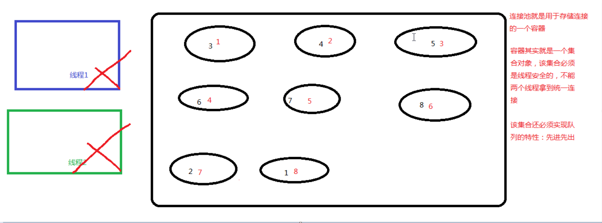
mybatis连接池的分类
mybatis连接池提供了3种方式的配置：
配置的位置：
主配置文件sqlMapConfig.xml中的dataSource标签，type属性就是表示采用何种连接池方式
type属性的取值：
- POOLED 采用传统的javax.sql.DataSource规范中的连接池，mybatis中有针对规范的实现
- UNPOOLED采用传统的获取连接的方式，虽然实现Javax.sql.DataSource接口，但是没有使用池的思想。
- JNDI采用服务器提供的JNDI技术实现，来获取DataSource对象，不同的服务器所能拿到DataSource是不一样的。
注意：如果不是web或者maven的war工程，是不能使用的。tomcat服务器，采用的连接池就是dbcp连接池。
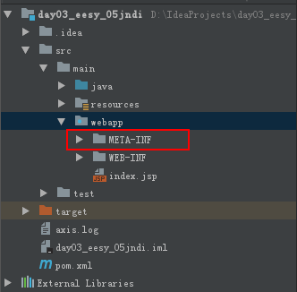
mybatis使用unpooled配置连接池的原理分析
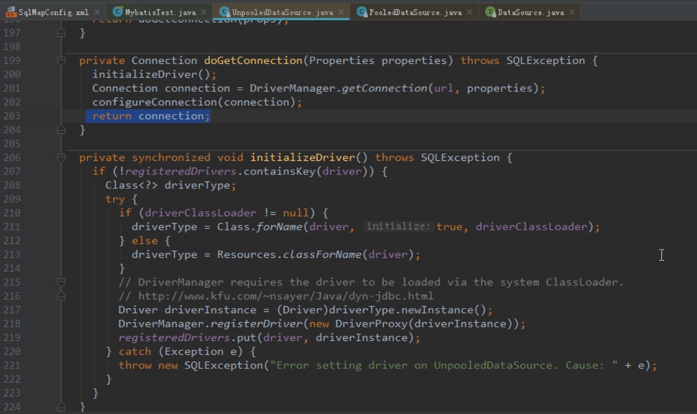
mybatis使用poolead配置连接的原理分析
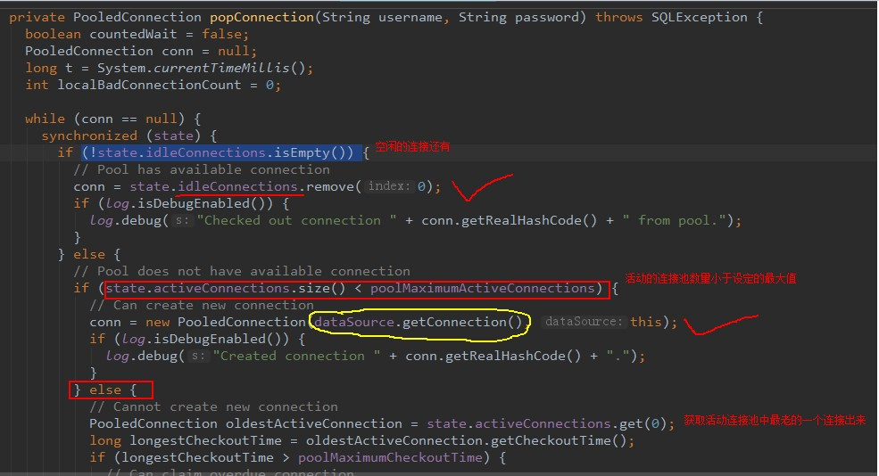
回顾事务
什么是事务？
事务是应用程序中一系列严密的操作，所有操作必须成功完成，否则在每个操作中所做的所有更改都会被撤销。也就是事务具有原子性，一个事务中的操作要么全部成功，要么一个不做。
事务的结束有两种，当事务中的所有步骤全部成功执行时，事务提交。如果其中一个步骤失败，将发生回滚操作，撤销之前的所有操作。
事务的ACID
- 原子性(Atomicity)：事务是数据库的逻辑工作单位，事务中包含的各操作要么都做，要么都不做。
- 一致性(Consistency)：事 务执行的结果必须是使数据库从一个一致性状态变到另一个一致性状态。因此当数据库只包含成功事务提交的结果时，就说数据库处于一致性状态。如果数据库系统 运行中发生故障，有些事务尚未完成就被迫中断，这些未完成事务对数据库所做的修改有一部分已写入物理数据库，这时数据库就处于一种不正确的状态，或者说是 不一致的状态。
- 隔离性(Isolation)：一个事务的执行不能其他事务干扰。即一个事务内部的操作及使用的数据对其他并发事务是隔离的。并发执行的各个事务之间不能相互干扰。
- 持续性(Durability)：也称永久性，指一个事务一旦提交，他对数据库中的数据的改变就应该是永久性的。接下来的其他操作或故障不应该对其结果有任何影响。
mybatis中的事物原理和自动提交设置
调用了java.sql包中的connection.commit()
使用sqlSession.openSession(boolean flag)：值为true时，事务会自动提交
mybatis中的动态sql语句-if标签
IUserDao.java1
List<User> findUserByCondition(User user);
IUserDao.xml1
2
3
4
5
6
7
8
9
10<sql id="defaultUser">
<!--注意：如果后面需要拼接条件此处不能写分号隔断-->
select * from user where 1=1
</sql>
<select id="findUserByCondition" resultMap="userMap" parameterType="user">
<include refid="defaultUser"></include>
<if test="username != null">
and username = #{username}
</if>
</select>
test1
2
3
4
5
6
7
8
9
10@Test
public void testFindByCondition(){
User u = new User();
u.setUsername("老王");
List<User> users = userDao.findUserByCondition(u);
for (User user : users) {
System.out.println(user);
}
}
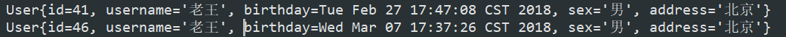
where标签
1 | <select id="findUserByCondition" resultMap="userMap" parameterType="user"> |
forEach标签和SQL标签
QueryVo
1 | /** |
IUserDao1
List<User> findUserInIds(QueryVo vo);
IUserDao.xml
1 | <!--根据queryvo中的集合实现查询用户列表--> |
Usertest
1 | @Test |
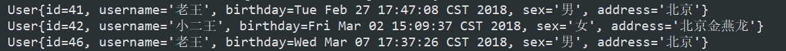
mybatis表之间关系分析
表之间的关系有几种：
一对多
多对一
一对一
多对多
举例：
用户和订单就是一对多
订单和用户就是多对一
一个用户可以下多个订单
多个订单属于同一个用户
人和身份证号就是一对一
一个人只能有一个身份证号
一个身份证号只能属于一个人
老师和学生之间就是多对多
一个学生可以被多个老师教过
一个老师可以交多个学生
特例：
如果拿出每一个订单，他都只能属于一个用户。
所以Mybatis就把多对一看成了一对一。
完成表的建立及实现单表查询
示例：用户和账户
一个用户可以有多个账户
一个账户只能属于一个用户(多个账号也可以属于同一个用户)
步骤：
- 建立两张表：用户表，账户表
让用户表和账户表之间具备一对多的关系：需要使用外键在账户表中添加 - 建立两个实体类：用户实体类和账户实体类
让用户和庄户的实体类能体现出一对多的关系 - 建立两个配置文件
用户的配置文件
账户的配置文件 - 实现配置：
当我们查询用户时，可以同时得到用于下所包含的账户信息
当我们查询账户时，可以同时得到账户的所属用户信息
Account
1 | package com.yu.domain; |
User
1 | package com.yu.domain; |
IAccountDao.xml
1 | <?xml version="1.0" encoding="UTF-8"?> |
IUserDao.xml
1 | <?xml version="1.0" encoding="UTF-8"?> |
test
1 | public class UserTest { |
一对一操作
方式一：通过写account的子类方式查询
- 创建AccountUser实体类继承Account类
1 | public class AccountUser extends Account { |
- 在IAccountDao接口中写findAllAccountUser()
1 | public interface IAccountDao { |
- 在IAccountDao.xml进行配置查询
1 | <select id="findAllAccountUser" resultType="accountuser"> |
- 测试
1 | @Test |
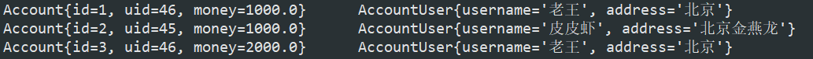
方式二：建立实体类关系的方式
- 在Account中创建主表实体的对象引用
1 | private int id; |
- 在IAccountDao.xml进行相关配置
1 | <resultMap id="accountuserMap" type="account"> |
- 测试
1 | @Test |
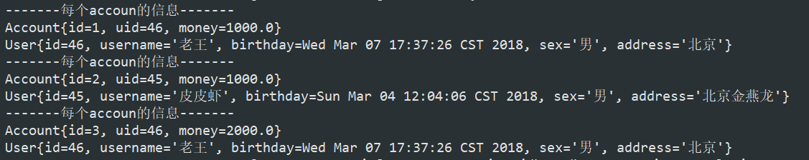
一对多查询操作
User
1 |
|
IUserDao.xml
1 | <!--配置 查询结果的列名和实体类的属性名和对应关系--> |
1 | <select id="findAll" resultMap="userMap"> |
test
1 | @Test |
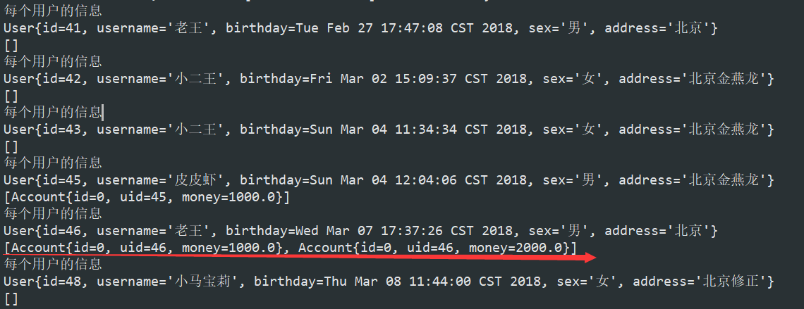
分析mybatis多对多的步骤
示例：用户和角色
一个用户可以有多个角色
一个角色可以赋予多个用户
步骤：
- 建立两张表：用户表，角色表
让用户表和角色表具有多对多的关系。需要使用中间表，中间表中包含各自的主键，在中间表中是外键。 - 建立两个实体类：用户实体类和角色实体类
让用户和角色的实体类能体现出来多对多的关系
各自包含对方一个集合引用 - 建立两个配置文件
用户的配置文件
角色的配置文件 - 实现配置：
当我们查询用户时，可以同时得到用户所包含的角色信息
当我们查询角色时，可以同时得到角色的所赋予的用户信息
查询用户获取用户所包含的角色信息
User
1 | //多对多的关系映射，一个角色可以赋予多个用户 |
IUserDao.xml
1 | <!--配置 查询结果的列名和实体类的属性名和对应关系--> |
test1
2
3
4
5
6
7
8
9@Test
public void testFindAll(){
List<User> users = userDao.findAll();
for (User user : users) {
System.out.println("每个用户的信息");
System.out.println(user);
System.out.println(user.getRoles());
}
}
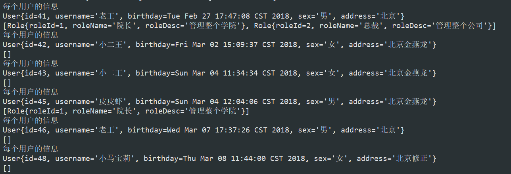
JNDI的概述和原理
JNDI是 Java 命名与文件夹接口（Java Naming and Directory Interface），在J2EE规范中是重要的规范之中的一个，不少专家觉得，没有透彻理解JNDI的意义和作用，就没有真正掌握J2EE特别是EJB的知识。
JNDI搭建maven的war工程
创建Maven的war工程并导入坐标
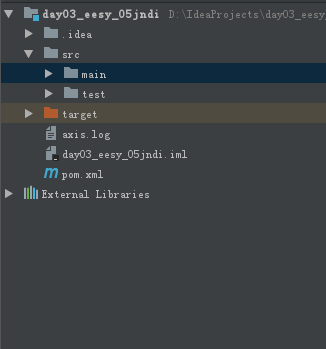1
2
3
4
5
6
7
8
9
10
11
12
13
14
15
16
17
18
19
20
21
22
23
24
25
26
27
28
29
30
31
32
33
34
35
36
37<dependencies>
<dependency>
<groupId>org.mybatis</groupId>
<artifactId>mybatis</artifactId>
<version>3.4.5</version>
</dependency>
<dependency>
<groupId>mysql</groupId>
<artifactId>mysql-connector-java</artifactId>
<version>5.1.6</version>
</dependency>
<dependency>
<groupId>log4j</groupId>
<artifactId>log4j</artifactId>
<version>1.2.12</version>
</dependency>
<dependency>
<groupId>junit</groupId>
<artifactId>junit</artifactId>
<version>4.10</version>
</dependency>
<dependency>
<groupId>javax.servlet</groupId>
<artifactId>servlet-api</artifactId>
<version>2.5</version>
</dependency>
<dependency>
<groupId>javax.servlet.jsp</groupId>
<artifactId>jsp-api</artifactId>
<version>2.0</version>
</dependency>
</dependencies>在webapp文件下创建META-INF目录
在META-INF目录中建立一个名为context.xml的配置文件
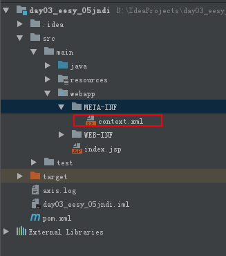
1 | <?xml version="1.0" encoding="UTF-8"?> |
- 修改SQLMapConfig.xml中的配置
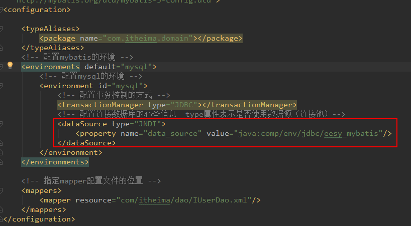